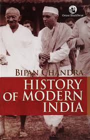
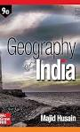
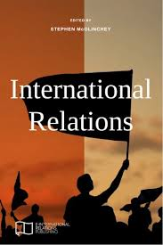
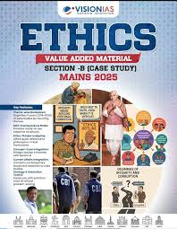

Indian Foreign Service (IFS)"The Foreign Service is not merely a career; it is a calling to serve your nation with dignity, shaping international relations and upholding India's values across the world." |
1. Basic Information About the Exam
|
2. Result Criteria & Merit Selection
Selection Process Breakdown:
|
3. Scope: Posts, Promotions, Salary & Nature of Work
A. Career Progression
- JTS
- STS
- Deputy Secretary
- Director
- Joint Secretary
- Ambassador / High Commissioner
B. Foreign Postings
- Embassies
- High Commissions
- Consulates
- Permanent Missions
- MEA Headquarters
C. Salary Structure
| Post | Pay Level | Monthly Salary |
|---|---|---|
| JTS | 10–11 | ₹56,100 – ₹1,77,500 |
| STS | 12 | ₹78,800 – ₹2,10,200 |
| Deputy Secretary | 14 | ₹1,44,200 – ₹2,18,200 |
| Ambassador | 16–17 | ₹2,25,000+ |
D. Allowances & Perks
- Foreign Allowance
- HRA
- Official Residence
- Household Staff
- Education Support
- Travel Benefits
- Diplomatic Passport
- Leave Benefits
- Medical Insurance
E. Nature of Work
- Diplomacy & Negotiations
- Citizen Protection Abroad
- Consular Services
- Trade Promotion
- Cultural Diplomacy
- Strategic Partnerships
- Policy Formulation
- Crisis Management
4. Examination Syllabus
Prelims
GS Paper:
- History
- Polity
- Economy
- Geography
- Current Affairs
- Environment
- Science & Tech
CSAT:
- Comprehension
- Reasoning
- Decision-making
- Maths
- English
Mains
- Essay
- GS I
- GS II
- GS III
- GS IV
- Optional I & II
- Language
- English
Note: Popular options include IR, PSIR, Economics, History.
5. Exam Pattern & Selection Process
Stage 1: Prelims
| Paper | Duration | Marks | Type |
|---|---|---|---|
| GS | 2 hrs | 200 | MCQ |
| CSAT | 2 hrs | 200 | MCQ |
Stage 2: Mains
| Paper | Duration | Marks |
|---|---|---|
| Essay | 3 hrs | 250 |
| GS I | 3 hrs | 250 |
| GS II | 3 hrs | 250 |
| GS III | 3 hrs | 250 |
| GS IV | 3 hrs | 250 |
| Optional I | 3 hrs | 250 |
| Optional II | 3 hrs | 250 |
| Language | 3 hrs | 300 |
| English | 3 hrs | 300 |
| Total | 2250 |
Stage 3: Interview
| Component | Duration | Marks |
|---|---|---|
| Interview | 20–25 min | 275 |
Final Rank = Mains + Interview
6. Training & Foundation Course
Training Institutions
- LBSNAA: 4 months
- SSIFS: IFS training
Training Duration
- 4 months foundation
- 12 months specialized
- Total: ~16 months
Training Modules
- Diplomatic Protocol
- International Law
- Foreign Language
- MEA Attachments
- Embassy Internship
- Bharat Darshan
- International Affairs
- Consular Operations
7. Preparation Resources
Books
- Laxmikanth
- Ramesh Singh
- Bipan Chandra
- Majid Husain
- IR Books
- Ethics Material






Websites
- MEA
- UPSC
- MEA Annual Reports
- SSIFS
Newspapers
Online
- PYQs
- Mock Tests
YouTube
8. Coaching Centres
| Institute | Medium | Strength |
|---|---|---|
| Chanakya IAS | Hindi/English | Strong IR |
| Delhi Career Group | English | Interactive Sessions |
| Arpit Academy | Hindi/English | Current Affairs Focus |
| Baba Ram Dass Institute | Hindi | Mentoring |
| Study Point | English | Experienced Faculty |
| IAS Pathshala | Hindi/English | Online Live Classes |
Conclusion
|
The Indian Foreign Service is a calling to serve the nation internationally. IFS officers represent India, shape foreign policy, and work across global platforms. The journey demands dedication, knowledge, and diplomacy but offers immense honor and responsibility. "Where you go, India goes with you." |